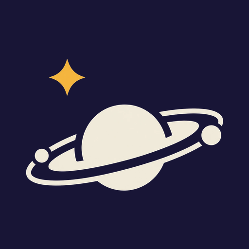

Privacybeleid Galactrivia
Ingangsdatum: 18 november 2026 · Laatst bijgewerkt: 22 november 2026
In het kort: Galactrivia heeft geen accounts en geen eigen server. Je scores en instellingen blijven op je eigen telefoon. Alleen als je zelf de Pro-modus van de hemelkaart aanzet, gebruikt de app je ongeveer-locatie, en ook die blijft op je telefoon. Om de app gratis te houden, toont Galactrivia advertenties van Google AdMob. Google verwerkt daarvoor gegevens over je apparaat. In de Europese Economische Ruimte en het Verenigd Koninkrijk vragen we eerst je toestemming voor gepersonaliseerde advertenties. Die toestemming kun je altijd wijzigen via Instellingen → Privacyinstellingen in de app.
1. Wie is verantwoordelijk?
Galactrivia wordt gemaakt door Wouter Bisseling, Nederland.
Contact over privacy: galactrivia@gmail.com
2. Welke gegevens blijven op je telefoon?
De app bewaart alleen op je eigen toestel:
- je scores en uitslagen van de dagpuzzels, en je reeks (aantal dagen op rij gespeeld);
- je instellingen (licht/donker, taal);
- of je Galactrivia Premium hebt gekocht.
Deze gegevens worden niet naar ons verstuurd. Wij kunnen ze niet inzien. Ze verdwijnen als je de app verwijdert of de appgegevens wist in de Android-instellingen.
3. Advertenties (Google AdMob)
Galactrivia gebruikt Google AdMob van Google Ireland Limited om advertenties te tonen. De Google Mobile Ads SDK verzamelt en deelt automatisch de volgende gegevens met Google:
| Gegeven | Voorbeeld |
|---|---|
| IP-adres | kan je globale locatie (land/regio) aangeven |
| Apparaat- en account-ID's | de Android-advertentie-ID en de app set ID |
| Interactie met de app | bijvoorbeeld het openen van de app en tikken op advertenties |
| Diagnostische gegevens | bijvoorbeeld de prestaties van de app en de SDK |
Doel: advertenties tonen en meten, analyse, en fraudepreventie. De gegevens worden versleuteld verstuurd (TLS).
Toestemming: in de EER en het VK zie je bij de eerste start een toestemmingsmelding van Google. Alleen met jouw toestemming toont de app gepersonaliseerde advertenties. Zonder toestemming krijg je beperkte of niet-gepersonaliseerde advertenties. Je kunt je keuze altijd wijzigen via Instellingen → Privacyinstellingen in de app. Je advertentie-ID kun je resetten of verwijderen in de Android-instellingen (Privacy → Advertenties).
Hoe Google deze gegevens gebruikt, lees je op policies.google.com/technologies/partner-sites en in het privacybeleid van Google.
4. Locatie en bewegingssensoren (Pro-modus van de hemelkaart)
De hemelkaart heeft een Pro-modus die laat zien welke sterren, planeten, de zon en de maan op dit moment boven jouw plek staan. Alleen als je die modus zelf aanzet, legt de app eerst uit waarvoor dit nodig is en vraagt Android daarna om toestemming voor je ongeveer-locatie (nauwkeurig tot op enkele kilometers). Precieze locatie en locatie op de achtergrond vraagt de app nooit.
- Waarvoor: alleen om de sterrenhemel goed te richten (welke hemel jij nu boven je hebt).
- Waar: de berekening gebeurt alleen op je telefoon. Je locatie wordt niet opgeslagen, niet naar ons of anderen verstuurd en nergens anders voor gebruikt.
- Bewegingssensoren: de app leest het kompas en de bewegingssensor van je telefoon om de kaart mee te laten draaien. Ook dat blijft op je telefoon. Hiervoor vraagt Android geen toestemming.
- Intrekken: je kunt de toestemming altijd intrekken in de Android-instellingen (Apps → Galactrivia → Rechten → Locatie). De gewone hemelkaart en de spellen werken zonder locatie.
Je ongeveer-locatie wordt door de locatiedienst van je telefoon bepaald (bij de meeste Android-telefoons de diensten van Google). Hoe Google daarmee omgaat, staat in het privacybeleid van Google.
5. Aankopen
De aankoop van Galactrivia Premium verloopt via Google Play. Wij ontvangen geen betaalgegevens zoals je naam, adres of rekening. De app krijgt van Google Play alleen te horen of de aankoop is gedaan, zodat de advertenties kunnen verdwijnen en de extra functies opengaan. Zie het privacybeleid van Google.
6. Grondslagen (AVG)
- Toestemming (art. 6 lid 1a AVG) voor gepersonaliseerde advertenties.
- Gerechtvaardigd belang (art. 6 lid 1f AVG) voor het tonen van beperkte of niet-gepersonaliseerde advertenties en voor fraudepreventie, om de app gratis te kunnen aanbieden.
- Uitvoering van een overeenkomst (art. 6 lid 1b AVG) voor het leveren van een gekochte upgrade.
- Toestemming (art. 6 lid 1a AVG) voor het gebruik van je ongeveer-locatie in de Pro-modus; die toestemming geef je via Android en kun je daar ook intrekken.
7. Hoe lang worden gegevens bewaard?
Gegevens op je telefoon blijven bewaard tot je de app verwijdert of de appgegevens wist. Gegevens die Google via AdMob verwerkt, bewaart Google volgens zijn eigen bewaartermijnen. Je locatie wordt niet bewaard. Wij slaan zelf niets op een server op.
8. Jouw rechten
Je hebt recht op inzage, correctie en verwijdering van je gegevens. Je mag bezwaar maken tegen verwerking, je kunt toestemming intrekken en je kunt een klacht indienen bij de Autoriteit Persoonsgegevens. Omdat wij zelf geen gegevens over jou opslaan, regel je de meeste zaken direct op je telefoon (appgegevens wissen, advertentie-ID resetten, Privacyinstellingen) of bij Google. Heb je een vraag? Mail ons via het adres hierboven.
9. Kinderen
Galactrivia is niet bedoeld voor kinderen jonger dan 13 jaar en verzamelt niet bewust gegevens van kinderen.
10. Beveiliging
Je spelgegevens staan alleen op je eigen toestel. Gegevens voor advertenties verstuurt de Google-SDK versleuteld. Alleen in de Pro-modus van de hemelkaart vraagt de app, na uitleg, om je ongeveer-locatie (zie punt 4). De app vraagt geen toegang tot je precieze locatie, contacten, camera of microfoon.
11. Wijzigingen
Als dit beleid verandert, passen we de datum bovenaan aan. Grote wijzigingen melden we in de beschrijving van de update in Google Play.